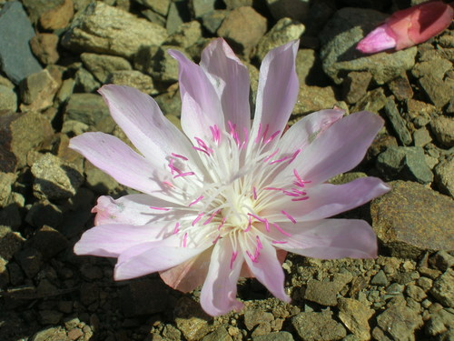

Montiaceae
Miner's Lettuce Family
Montiaceae is a family of flowering plants primarily consisting of annual or perennial herbs, often succulent, belonging to the order Caryophyllales (core Caryophyllales clade). Distributed widely, especially in temperate regions of the Americas (particularly western North America), the family includes well-known genera like Claytonia (Miner's Lettuce, Spring Beauty) and Lewisia. They are characterized by often fleshy leaves, flowers typically with 2 persistent sepals and 5 ephemeral petals, and fruit usually a capsule.
Overview
The Montiaceae family comprises about 14 genera and around 230 species. This family was relatively recently segregated from the Portulacaceae based on molecular phylogenetic studies, which showed that Portulacaceae in its traditional sense was not monophyletic. Montiaceae now encompasses genera like Claytonia, Lewisia, Montia, and Phemeranthus.
Members are typically small, often succulent herbs, adapted to a range of habitats from moist woodlands and stream banks to dry, rocky slopes and alpine environments. Western North America is a major center of diversity for the family, particularly for genera like Claytonia and Lewisia. Many species are geophytes, surviving unfavorable seasons via underground tubers or corms.
Several species are cultivated as ornamentals, especially the showy species of Lewisia and the delicate Spring Beauties (Claytonia). Miner's Lettuce (Claytonia perfoliata) is known for its edible leaves, historically consumed by miners and indigenous peoples to prevent scurvy due to its Vitamin C content.
Quick Facts
- Scientific Name: Montiaceae Raf.
- Common Name: Miner's Lettuce family
- Number of Genera: Approximately 14
- Number of Species: Approximately 230
- Distribution: Widespread, especially temperate Americas (esp. W North America) and Eurasia.
- Evolutionary Group: Eudicots - Core Caryophyllales
Key Characteristics
Growth Form and Habit
Mostly annual or perennial herbs, often somewhat fleshy or succulent. Many are geophytes with tubers, corms, or fleshy taproots. Stems erect, ascending, or forming basal rosettes.
Leaves
Leaves are simple, entire, and often succulent. Arrangement is variable: typically alternate or basal, sometimes opposite (especially cauline leaves). Stipules are generally absent, or modified into scarious margins or tufts of hair at the petiole base.
Inflorescence
Flowers are borne in terminal or axillary inflorescences, typically cymes or racemes, sometimes solitary.
Flowers
Flowers are typically bisexual and actinomorphic (radially symmetrical), though sometimes slightly zygomorphic. Key features include:
- Perianth: Usually consists of 2 persistent, sepal-like bracteoles (often referred to as sepals) and (4-)5 petal-like tepals (often referred to as petals). The "petals" are typically distinct or slightly fused at the base, often white, pink, or yellow, and usually ephemeral (lasting only a short time, often a single day).
- Androecium: Stamens typically as many as and opposite the "petals" (usually 5), sometimes fewer or more. Filaments are often attached to the base of the "petals".
- Gynoecium: Ovary is superior (sometimes half-inferior), composed of usually 2-3 (up to 8) fused carpels (syncarpous). It is typically unilocular (one chamber) with basal or free-central placentation, containing few to many ovules. Styles are usually distinct or fused below.
Fruits and Seeds
The fruit is typically a loculicidal capsule, usually opening by 3 valves (corresponding to the carpel number). Seeds are often few to many, typically black, shiny, and lens-shaped, sometimes with an aril (elaiosome) aiding in ant dispersal.
Chemical Characteristics
As members of the core Caryophyllales, Montiaceae produce betalain pigments (responsible for reddish/yellowish colors, though often masked in flowers by other pigments). Many species accumulate calcium oxalate crystals.
Field Identification
Identifying Montiaceae often involves recognizing their herbaceous, often succulent habit, characteristic flower structure with 2 persistent "sepals" and 5 ephemeral "petals", and capsule fruits.
Primary Identification Features
- Habit: Herbs, often succulent, frequently with basal rosettes or tubers/corms.
- Leaves: Simple, entire, often fleshy, alternate or basal (sometimes opposite).
- Flowers: Distinctive structure with 2 persistent sepal-like bracteoles and usually 5 delicate, ephemeral petal-like tepals (white, pink, yellow).
- Stamens: Usually 5, opposite the "petals".
- Ovary: Superior (mostly), 2-3 carpels.
- Fruit: Capsule, typically 3-valved.
- Pigments: Betalains present (may cause reddish stems/leaves).
Secondary Identification Features
- Habitat: Often in moist, cool, or seasonally wet environments, including mountains and woodlands.
- Seeds: Often black, shiny, lens-shaped, sometimes arillate.
- Ephemeral Flowers: Petals often last only a day or less.
Seasonal Identification Tips
- Spring/Early Summer: Peak flowering time for many species, especially temperate ones like Claytonia and Lewisia. The ephemeral flowers are key.
- Other Times: Basal rosettes of succulent leaves (e.g., Lewisia) or distinctive leaf shapes (e.g., perfoliate leaves of Claytonia perfoliata) can aid identification when not in flower. Tubers/corms may be present underground.
Common Confusion Points
- Portulacaceae (Purslane Family): Now restricted mainly to Portulaca. Portulaca has flowers with 2 sepals and 4-6 petals similar to Montiaceae, but the fruit is a circumscissile capsule (opening by a lid), and leaves are often opposite or clustered terminally.
- Caryophyllaceae (Pink Family): Usually have 5 distinct sepals and 5 distinct petals (often notched), typically opposite leaves, and non-succulent habit (mostly).
- Crassulaceae (Stonecrop Family): Often highly succulent with flowers typically having parts in 4s or 5s (sepals, petals, stamens, carpels usually equal in number), and fruit typically an aggregate of follicles (not a capsule).
Field Guide Quick Reference
Look For:
- Herbs, often succulent
- Leaves simple, entire, often fleshy
- Flowers with 2 persistent "sepals"
- Flowers with 5 ephemeral "petals" (usually)
- Stamens usually 5
- Superior ovary (usually)
- Capsule fruit (usually 3-valved)
- Betalain pigments
Key Variations:
- Leaf arrangement (basal, alternate, opposite)
- Presence of tubers/corms
- Flower color (white, pink, yellow)
- Degree of succulence
Notable Examples
Well-known genera in the Montiaceae family include:

Claytonia perfoliata
Miner's Lettuce
An annual herb native to western North America, known for its distinctive pair of stem leaves fused together to surround the stem (perfoliate) below the inflorescence. Basal leaves are long-petioled. Small white or pinkish flowers. Edible and rich in Vitamin C.

Claytonia virginica
Virginia Spring Beauty
A common spring ephemeral wildflower in eastern North American woodlands. Arises from a small corm, typically has a pair of opposite, linear stem leaves, and bears delicate white to pink flowers with darker pink veins.

Lewisia rediviva
Bitterroot
The state flower of Montana, native to western North America. A perennial geophyte with a fleshy taproot. Succulent basal leaves wither before the large, showy pink or white flowers appear near ground level. Highly prized by rock gardeners.

Montia fontana
Blinks, Water Chickweed
A small, often aquatic or semi-aquatic annual herb with a cosmopolitan distribution. Has small, opposite leaves and tiny, inconspicuous white flowers. Often found in springs, wet ground, or shallow water.
Phylogeny and Classification
Montiaceae belongs to the order Caryophyllales and is part of the core Caryophyllales clade. This placement is strongly supported by molecular data.
The family was segregated from Portulacaceae when molecular studies revealed that Portulacaceae (traditionally including genera like Claytonia, Lewisia, Montia, and Portulaca) was paraphyletic. The core genus Portulaca formed one distinct clade (now Portulacaceae sensu stricto), while the remaining genera formed another clade, which was established as Montiaceae. Montiaceae is closely related to other core Caryophyllales families, particularly the clade containing Cactaceae, Portulacaceae, Talinaceae, Anacampserotaceae, and Didiereaceae, many of which share succulent traits.
Position in Plant Phylogeny
- Kingdom: Plantae
- Clade: Angiosperms (Flowering plants)
- Clade: Eudicots
- Clade: Core Eudicots
- Order: Caryophyllales
- Clade: Core Caryophyllales
- Family: Montiaceae
Evolutionary Significance
Montiaceae is significant for understanding evolution within Caryophyllales:
- Succulence Evolution: Contributes to the study of the repeated evolution of succulence within the Portulacineae clade of Caryophyllales, likely as an adaptation to dry or physiologically stressful environments.
- Taxonomic Revision: The establishment of Montiaceae exemplifies how molecular phylogenetics reshapes traditional classifications based on morphology alone.
- Biogeography: The family's distribution, particularly the diversity in western North America, provides insights into the diversification and historical biogeography of temperate floras.
- Floral Structure: The characteristic "2 sepals + 5 petals" structure (derived from bracteoles and tepals) is a key feature within this part of Caryophyllales.
- Life History Adaptations: Includes diverse life strategies, from ephemeral annuals to long-lived geophytes with specialized storage organs (tubers, corms).